기계설계산업기사 (2016-03-06 기출문제)
1과목: 기계가공법 및 안전관리
1. 공작물의 표면 거칠기와 치수 정밀도에 영향을 미치는 요소로 거리가 먼 것은?
- 절삭유
- 절삭 깊이
- 절삭 속도
- 칩 브레이커
(정답률: 77%)

2. 총형커터에 의한 방법으로 치형을 절삭할 때 사용하는 밀링커터는?
- 베벨 밀링커터
- 헬리컬 밀링커터
- 인벌류트 밀링커터
- 하이포이드 밀링커터
(정답률: 68%)
3. 밀링 작업 시의 안전 수칙으로 틀린 것은?
- 칩을 제거할 때 기계를 정지시킨 후 브러시로 털어낸다.
- 주축 회전 속도를 변환 할 때에는 회전을 정지시키고 변환한다.
- 칩가루가 날리기 쉬운 가공물의 공작 시에는 방진 안경을 착용한다.
- 절삭유를 공급할 때 커터에 감겨들지 않도록 주의하고, 공작 중 다듬질 면은 손을 대어 거칠기를 점검한다.
(정답률: 90%)
4. 크레이터 마모에 관한 설명 중 틀린 것은?
- 유동형 칩에서 가장 뚜렷이 나타난다.
- 절삭공구의 상면 경사각이 오목하게 파여지는 현상이다.
- 크레이터 마모를 줄이려면 경사면 위의 마찰계수를 감소시킨다.
- 처음에 빠른 속도로 성장하다가 어느 정도 크기에 도달하면 느려진다.
(정답률: 63%)
5. 다듬질 면 상태의 평면 검사에 사용되는 수공구는?
- 트러멜
- 나이프 에지
- 실린더 게이지
- 앵글 플레이트
(정답률: 67%)
6. 리머의 모양에 대한 설명 중 틀린 것은?
- 조정 리머 : 절삭 날을 조정할 수 있는 것
- 솔리드 리머 : 자루와 절삭 날이 다른 소재로 된 것
- 셀 리머 : 자루와 절삭 날 부위가 별개로 되어 있는 것
- 팽창 리머 : 가공물의 치수에 따라 조금 팽창할 수 있는 것
(정답률: 70%)
7. 선반작업시 공구에 발생하는 절삭저항 중 가장 큰 것은?
- 배분력
- 주분력
- 마찰분력
- 이송분력
(정답률: 80%)
8. 한계게이지의 종류에 해당되지 않는 것은?
- 봉 게이지
- 스냅 게이지
- 다이얼 게이지
- 플러그 게이지
(정답률: 63%)
9. 절삭공구 재료 중 소결 초경합금에 대한 설명으로 옳은 것은?
- 진동과 충격에 강하며 내마모성이 크다.
- Co, W, Cr 등을 주조하여 만든 합금이다.
- 충분한 경도를 얻기 위해 질화법을 사용한다.
- W, Ti, Ta 등의 탄화물 분말을 Co를 결합체로 소결한 것이다.
(정답률: 65%)
10. CNC 선반 프로그래밍에 사용되는 보조기능 코드와 기능이 옳게 짝지어진 것은?
- M01 : 주축 역회전
- M02 : 프로그램 종료
- M03 : 프로그램 정지
- M04 : 절삭유 모터 가동
(정답률: 69%)
11. 편심량 2.2mm로 가공된 선반 가공물을 다이얼 게이지로 측정할 때, 다이얼 게이지 눈금의 변위량은 몇 mm인가?
- 1.1
- 2.2
- 4.4
- 6.6
(정답률: 77%)
12. 1차로 가공된 가공물의 안지름보다 다소 큰 강구(steel ball)를 압입 통과시켜서 가공물의 표면을 소성변형으로 가공하는 방법은?
- 래핑(lapping)
- 호닝(honing)
- 버니싱(burnishing)
- 그라인딩(grinding)
(정답률: 64%)
13. 직접 측정용 길이 측정기가 아닌 것은?
- 강철자
- 사인 바
- 마이크로미터
- 버니어캘리퍼스
(정답률: 82%)
14. 연삭숫돌 입자의 종류가 아닌 것은?
- 에머리
- 코런덤
- 산화규소
- 탄화규소
(정답률: 56%)
15. 다음 중 밀링작업에서 판캠을 절삭하기에 가장 적합한 밀링커터는?
- 엔드밀
- 더브테일 커터
- 메탈 슬리팅 소
- 사이드 밀링 커터
(정답률: 60%)
16. 열경화성 합성수지인 베이크라이트(bakelite)를 주성분으로 하며 각종 용제, 기름 등에 안정된 숫돌로서 절단용 숫돌 및 정밀 연삭용으로 적합한 결합제는?
- 고무 결합제
- 버닐 결합제
- 셀락 결합제
- 레지노이드 결합제
(정답률: 72%)
17. 지름 10mm, 원추 높이 3mm인 고속도강 드릴로 두께가 30mm인 연강판을 가공할 때 소요시간은 약 몇 분인가? (단, 이송은 0.3mm/rev, 드릴의 회전수는 667rpm 이다.)
- 6
- 2
- 1.2
- 0.16
(정답률: 34%)
18. 밀링머신에서 원주를 단식 분할법으로 13등분하는 경우의 설명으로 옳은 것은?
- 13구멍 열에서 1회전에 3구멍씩 이동한다.
- 39구멍 열에서 3회전에 3구멍씩 이동한다.
- 40구멍 열에서 1회전에 13구멍씩 이동한다.
- 40구멍 열에서 3회전에 13구멍씩 이동한다.
(정답률: 61%)
19. 밀링머신에서 기어의 치형에 맞춘 기어 커터를 사용하여, 기어소재 원판을 같은 간격으로 분할 가공하는 방법은?
- 래크법
- 창성법
- 총형법
- 형판법
(정답률: 48%)
20. 선반의 부속품 중에서 돌리개(dog)의 종류로 틀린 것은?
- 곧은 돌리개
- 브로치 돌리개
- 굽은(곡형) 돌리개
- 평행(클램프) 돌리개
(정답률: 72%)
2과목: 기계제도
21. 다음 입체도의 화살표(↗) 방향 투상도로 가장 적합한 것은?
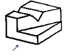
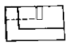
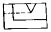
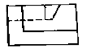
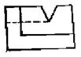
(정답률: 77%)
22. 도면에 그림과 같은 기하공차가 도시되어 있을 때 이에 대한 설명으로 옳은 것은?
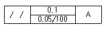
- 경사도 공차를 나타낸다.
- 전체 길이에 대한 허용값은 0.1이다.
- 지정길이에 대한 허용값은 0.⑤/100mm이다.
- 이 기하공차는 데이텀 A를 기준으로 100m 이내의 공간을 대상으로 한다.
(정답률: 58%)
23. 다음 중 호의 치수 기입을 나타낸 것은?
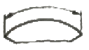
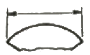
(정답률: 72%)
24. 그림과 같은 입체도에서 화살표(↗) 방향을 정면으로 할 때 정투상도를 가장 옳게 나타낸 것은?
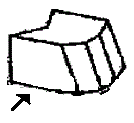
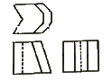
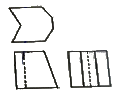
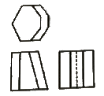
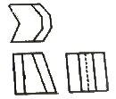
(정답률: 81%)
25. 다음 구름 베어링 호칭 번호 중 안지름이 22mm 인 것은?
- 622
- 6222
- 62/22
- 62-22
(정답률: 76%)
26. 다음 나사의 도시법에 관한 설명 중 옳은 것은?
- 암나사의 골지름은 가는 실선으로 표현한다.
- 암나사의 안지름은 가는 실선으로 표현한다.
- 수나사의 바깥지름은 가는 실선으로 표현한다.
- 수나사의 골지름은 굵은 실선으로 표현한다.
(정답률: 53%)
27. 크롬 몰리브덴강 단강품의 KS 재질 기호는?
- SCM
- SNC
- SFCM
- 누츠
(정답률: 46%)
28. 다음 제3각법으로 투상된 도면 중 잘못된 투상도가 있는 것은?(문제 오류로 그림이 정확하지 않습니다. 정답은 3번입니다. 참고용으로만 사용하세요.)
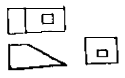
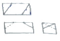
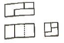
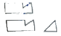
(정답률: 67%)
29. 그림과 같은 KS 용접기호 해독으로 올바른 것은?
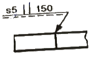
- 루트 간격은 5mm
- 홈 각도는 150°
- 용접피치는 150mm
- 화살표쪽 용접을 의미함
(정답률: 75%)
30. 다음 그림에서 “C2"가 의미하는 것은?
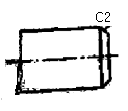
- 크기가 2인 15°모떼기
- 크기가 2인 30°모떼기
- 크기가 2인 45°모떼기
- 크기가 2인 65°모떼기
(정답률: 87%)
31. 파단선에 대한 설명으로 옳은 것은?
- 대상물의 일부분을 가상으로 제외했을 경우의 경계를 나타내는 선
- 기술, 기호 등을 나타내기 위하여 끌어낸 선
- 반복하여 도형의 피치를 잡는 기준이 되는 선
- 대상물이 보이지 않는 부분의 형태를 나타낸 선
(정답률: 69%)
32. 기준치수가 ø50인 구멍기준식 끼워 맞춤에서 구멍과 축의 공차 값이 다음과 같을 때 틀린 것은?
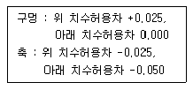
- 축의 최대 허용치수 : 49.975
- 구멍의 최소 허용치수 : 50.00
- 최대 틈새 : 0.⑤0
- 최소 틈새 : 0.025
(정답률: 74%)
33. 기어제도에 관한 설명으로 옳지 않은 것은?
- 잇봉우리원은 굵은 실선으로 표시하고 피치원은 가는 1점 쇄선으로 표시한다.
- 이골원은 가는 실선으로 표시한다. 다만 축에 직각인 방향에서 본 그림을 단면으로 도시할 때는 이골의 선은 굵은 실선으로 표시한다.
- 잇줄 방향은 통상 3개의 가는 실선으로 표시한다. 다만 주 투영도를 단면으로 도시할 때 외접 헬리컬 기어의 잇줄 방향을 지면에서 앞외 이의 잇줄방향을 3개의 가는 2점 쇄선으로 표시한다,
- 맞물리는 기어의 도시에서 주 투영도를 단면으로 도시할 때는 맞물림부의 한쪽 잇봉우리 원을 표시하는 선은 가는 1점 쇄선 또는 굵은 1점 쇄선으로 표시한다.
(정답률: 45%)
34. 그림과 같은 입체도에서 화살표 방향에서 본 정면도를 가장 올바르게 나타낸 것은?
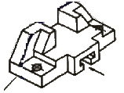
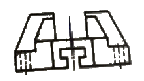
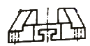
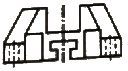
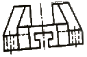
(정답률: 77%)
35. 아래 원뿔을 전개하면 오른쪽의 전개도와 같을 때 θ는 약 몇 도(°)인가? (단, r = 20mm, h = 100mm 이다.)
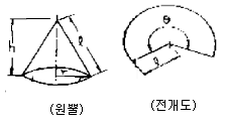
- 약 130°
- 110°
- 약 90°
- 약 70°
(정답률: 38%)
36. h6 공차인 축에 중간 끼워 맞춤이 적용되는 구멍의 공차는?
- R7
- K7
- G7
- F7
(정답률: 59%)
37. 그림과 같은 I형강의 표시법으로 옳은 것은? (단, 형강의 길이는 L 이다.)
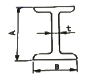
- I A × B × t - L
- I t × B × A - L
- I B × A × t - L
- I B × A × t × L
(정답률: 80%)
38. 다음 도면에서 A의 길이는 얼마인가?
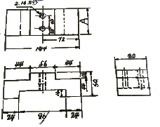
- 44
- 80
- 96
- 144
(정답률: 85%)
39. 그림과 같은 정면도와 평면도에 가장 적절한 우측면도는?
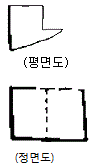
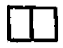
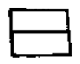
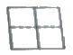
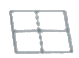
(정답률: 76%)
40. 다음 중 평면도를 나타내는 기호는?
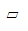
- //
- ◯
- ☒
(정답률: 85%)
3과목: 기계설계 및 기계재료
41. 스프링강이 갖추어야 할 특성으로 틀린 것은?
- 탄성한도가 커야 한다.
- 마텐자이트 조직으로 되어야 한다.
- 충격 및 피로에 대한 저항력이 커야 한다.
- 사용도 중 영구변형을 일으키지 않아야 한다.
(정답률: 77%)
42. 탄소공구강의 재료 기호로 옳은 것은?
- SPS
- STC
- STD
- STS
(정답률: 84%)
43. 초소성을 얻기 위한 조직의 조건으로 틀린 것은?
- 결정립은 미세화 되어야 한다.
- 결정립 모양은 등축이어야 한다.
- 모상의 입계는 고경각인 것이 좋다.
- 모상 입계가 인장 분리되기 쉬워여 한다.
(정답률: 53%)
44. 다음 중 원소가 강재에 미치는 영향으로 틀린 것은?
- S : 절삭성을 향상시킨다.
- Mn : 황의 해를 막는다.
- H2유동성을 좋게 한다.
- P : 결정립을 조대화 시킨다.
(정답률: 62%)
45. 알루미늄 합금 중 주성분이 AI-Cu-Ni-Mg계 합금인 것은?
- Y합금
- 알민(almin)
- 알드리(aldrey)
- 알클래디(alclad)
(정답률: 81%)
46. 백주철을 열처리로에 넣어 가열해서 탈탄 또는 흑연화 하는 방법으로 제고된 것은?
- 회주철
- 반주철
- 칠드 주철
- 가단 주철
(정답률: 58%)
47. 애드미럴티(admiralty)황동의 조성은?
- 7 : 3황동 + Sn(1% 정도)
- 7 : 3황동 + Pb(1% 정도)
- 6 : 4황동 + Sn(1% 정도)
- 6 : 4황동 + Pb(1% 정도)
(정답률: 63%)
48. 탄성한도를 넘어서 소성 변형을 시킨 경우에 하중을 제거하면 원래상태로 돌아가는 성질을 무엇이라 하는가?
- 신소재 효과
- 초탄성 효과
- 초소성 효과
- 시효경화 효과
(정답률: 70%)
49. 자정재료를 연질과 경질로 나눌 때 경질 자석에 해당되는 것은>?
- Si경판
- 퍼멀로이
- 센더스트
- 알니코 자석
(정답률: 63%)
50. 열처리의 목적을 설명한 것으로 옳은 것은?
- 담금질 : 강을 A1변태점까지 가열하여 연성을 증가시킨다.
- 뜨임 : 소성가공에 의한 내부응력을 증가시켜 절삭성을 향상시킨다.
- 풀림 : 강의 강도, 경도를 증가시키고, 조직을 마텐자이트조직으로 변태시킨다.
- 불림 : 재료의 결정조직을 미세화하고, 기계적 성질을 개량하여 조직을 표준화 한다.
(정답률: 68%)
51. 지름 20mm, 피치 2mm인 3줄 나사를 1/2 회전하였을 때 이 나사의 진행거리는 몇 mm인가?
- 1
- 3
- 4
- 6
(정답률: 74%)
52. 942N·m의 토크를 전달하는 지름 50mm인 축에 사용할 묻힘 키(폭×높이=12mm×8mm)의 길이는 최소 몇 mm 이상이어야 하는가? (단, 키의 허용전단응력은 78.48N/mm2 이다.)
- 30
- 40
- 50
- 60
(정답률: 47%)
53. 원통롤러 베어링 N206(기본 동정격하중 14.2kN)이 600rpm으로 1.96kN의 베어링 하중을 받치고 있다. 이 베어링의 수명은 약 몇 시간인가? (단, 베어링 하중계수(fW)는 1.5를 적용한다.)
- 4200
- 4800
- 5300
- 5900
(정답률: 37%)
54. 하중의 크기 및 방향이 주기적으로 변화하는 하중으로서 양진하중을 의미하는 것은?
- 변동하중(variable load)
- 반복하중(repeated load)
- 교번하중(alternate load)
- 충격하중(impact load)
(정답률: 68%)
55. 다음 중 정숙하고 원활한 운전을 하고, 특히 고속회전이 필요할 때 적합한 체인은?
- 사일런트 체인(silent chain)
- 코일 체인(coil chain)
- 롤러 체인(roller chain)
- 블록 체인(block chain)
(정답률: 74%)
56. 2.2kW의 동력을 1800rpm으로 전달시키는 표준 스퍼기어가 있다. 이 기어에 작용하는 회전력은 약 몇 N 인가? (단, 스퍼기어 모듈은 4 이고, 잇수는 25이다.)
- 163
- 195
- 233
- 289
(정답률: 37%)
57. 맞대기 용접이음에서 압축하중은 W, 용접부의 길이를 ℓ, 판 두께를 t라 할 때 용접부의 압축응력을 계산하는 식으로 옳은 것은?
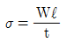
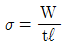
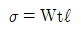
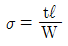
(정답률: 69%)
58. 밴드 브레이크에서 밴드에 생기는 안장응력과 관련하여 다음 중 옳은 관계식은? (단, σ : 밴드에 생기는 인장응력, F1 : 밴드의 인장측 장력, t : 밴드 두께, b : 밴드의 너비이다.)
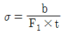
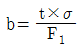
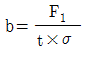
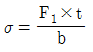
(정답률: 49%)
59. 300rpm으로 2.5kW의 동력을 전달시키는 축에 발생하는 비틀림 모멘트는 약 몇 N·m 인가?
- 80
- 60
- 45
- 35
(정답률: 31%)
60. 판 스프링(leaf spring)의 특징에 관한 설명으로 거리가 먼 것은?
- 팔 사이의 마찰에 의해 진동을 감쇠한다.
- 내구성이 좋고, 유지보수가 용이하다.
- 트럭 및 철도차량의 현가장치로 주로 이용된다.
- 판 사이의 마찰작용으로 인해 미소진동의 흡수에 유리하다.
(정답률: 54%)
4과목: 컴퓨터응용설계
61. 다음 중 공학적 해석을 위한 물리적인 성질(부피 등)을 제공할 수 있는 모델링은?
- 2차원 모델링
- 서피스(surface) 모델링
- 솔리드(solid) 모델링
- 와이어 프레림(wire frame) 모델링
(정답률: 83%)
62. CAD/CAM 시스템의 데이터 교환을 위한 중간파일(Neutral File)의 형식이 아닌 것은?
- IGES
- DXF
- STEP
- CALS
(정답률: 75%)
63. CAD 시스템의 출력장치로 볼 수 없는 것은?
- 플로터
- 디지타이저
- PDP
- 프린터
(정답률: 66%)
64. 그림과 같이 곡면 모델링 시스템에 의해 만들어진 곡면을 불러들여 기존 모델의 평면을 바꿀 수 있는 모델링 기능은 무엇인가?
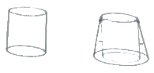
- 네스팅(nesting)
- 트위킹(tweaking)
- 돌출하기(extruding)
- 스위핑(sweeping)
(정답률: 70%)
65. 다음 중 CAD 용 그래픽 터미널 스크린의 해상도를 결정하는 요소는?
- 칼라(color)의 표시 가능 수
- 픽셀(pixel)의 수
- 스크린의 종류
- 사용 전압
(정답률: 82%)
66. CRT 그래픽 디스플레이 종류가 아닌 것은?
- 액정형
- 스토리지형
- 랜덤 스캔형
- 래스터 스캔형
(정답률: 46%)
67. 다음 중 숨은선 또는 숨은면을 제거하기 위한 방법에 속하지 않는 것은?
- x-버퍼에 의한 방법
- z-버퍼에 의한 방법
- 후방향 제거 알고리즘
- 깊이 분류 알고리즘
(정답률: 51%)
68. 다음 중 CAD에서의 기하학적 데이터(점, 선 등)의 변환행렬과 관계가 먼 것은?
- 이동
- 회전
- 복사
- 반사
(정답률: 52%)
69. 다음 중 CAD의 형상모델링에서 곡면을 나타낸 수 있는 방법이 아닌 것은?
- Coons-곡면(surface)
- Bezier-곡면(surface)
- B-Spline-곡면(surface)
- Repular-곡면(surface)
(정답률: 75%)
70. 전자발광형 디스플레이 장치(혹은 EL 패널)에 대한 설명으로 틀린 것은?
- 스스로 빛을 내는 성질을 가지고 있다.
- 백라이트를 사용하여 보다 선명한 화질을 구현한다.
- TFT-LCD 보다 시야각에 제한이 없다.
- 응답시간이 빨라 고화질 영상을 자연스럽게 처리할 수 있다.
(정답률: 61%)
71. 생성하고자하는 곡선을 근사하게 포함하는 다각형의 꼭짓점들을 이용하여 정의되는 베지어(Bezier) 곡선에 대한 설명으로 틀린 것은?
- 생성되는 곡선은 다각형의 양끝점을 반드시 통과한다.
- 다각형의 첫째 선분은 시작점에서의 접선벡터와 반드시 같은 방향이다.
- 다각형의 마지막 선분은 끝점에서의 접선벡터와 반드시 같은 방향이다.
- n개의 꼭짓점에 의해서 생성된 곡선은 n차 곡선이 된다.
(정답률: 74%)
72. 다음 행렬의 곱(AB)을 옳게 구한 것은?
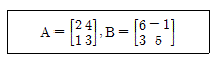
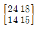
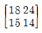
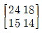
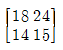
(정답률: 64%)
73. 각 도형요소를 하나씩 지정하거나 하나의 폐다각형을 지정하여 안쪽이나 바깥쪽에 있는 모든 도형요소를 하나의 단위로 묶어 한번에 조작할 수 있는 기능은?
- 그룹(group)화 기능
- 데이터베이스 기능
- 다층구조(layer) 기능
- 라이브러리(library) 기능
(정답률: 76%)
74. CSG 모델링 방식에서 볼 연산(boolean operation)이 아닌 것은?
- Union(합)
- Subtract(차)
- Intersect(적)
- Project(투영)
(정답률: 76%)
75. 일반적인 CAD 시스템의 2차원 평면에서 정해진 하나의 원을 그리는 방법이 아닌 것은?
- 원주상의 세 점을 알 경우
- 원의 반지름과 중심점을 알 경우
- 원주상의 한 점과 원의 반지름을 알 경우
- 원의 반지름과 2개의 접선을 알 경우
(정답률: 63%)
76. 3차원 변환에서 Z축을 기준으로 다음의 변환식에 따라 P점은 P'으로 임의의 각도(θ)만큼 변환할 때 변환 행렬식(T)으로 옳은 것은? (단, 반시계 방향으로 회전한 각을 양(+)의 각으로 한다.)
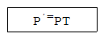
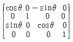
(정답률: 38%)
77. 정육면체 같은 간단한 입체의 집합으로 물체를 표현하는 분해 모델(Decomposition Model) 표현이 아닌 것은?
- 복셀(Voxel) 표현
- 옥트리(Octree) 표현
- 세포(Cell) 표현
- 셀(Shell) 표현
(정답률: 47%)
78. 3차원 형상의 모델링 방식에서 B-rep 방식과 비교하여 CSG 방식의 장점으로 옳은 것은?
- 투시도 작성이 용이하다.
- 전개도의 작성이 용이하다.
- B-Rep 방식보다는 복잡한 형상을 나타내는데 유리하다.
- 중량을 계산하는데 용이하다.
(정답률: 47%)
79. 임의의 4개의 점이 공간상에 구성되어 있다. 4개의 점으로 한 개의 베지어(Bezier) 곡선을 구성한다면, 베지어 곡선을 구성하기 위한 블렌딩 함수는 몇 차식인가?
- 2차식
- 3차식
- 4차식
- 5차식
(정답률: 68%)
80. 원추를 평면으로 잘랐을 때 생기는 단면곡선(conic section curve)이 아닌 것은?
- 타원
- 포물선
- 쌍곡선
- 사이클로이드 곡선
(정답률: 69%)